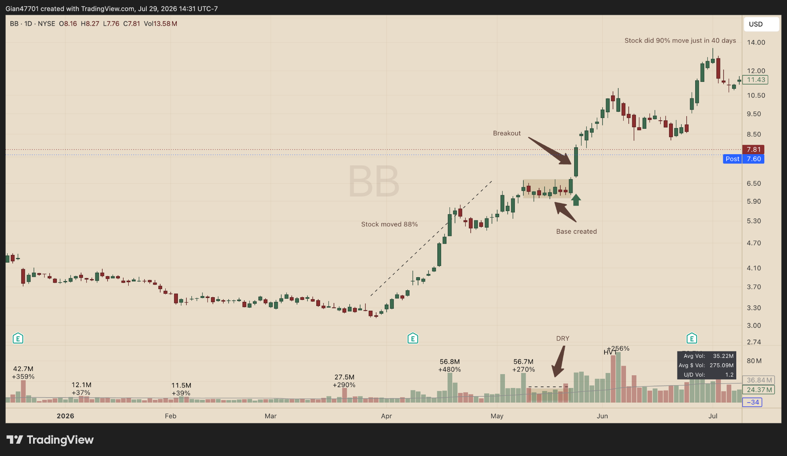
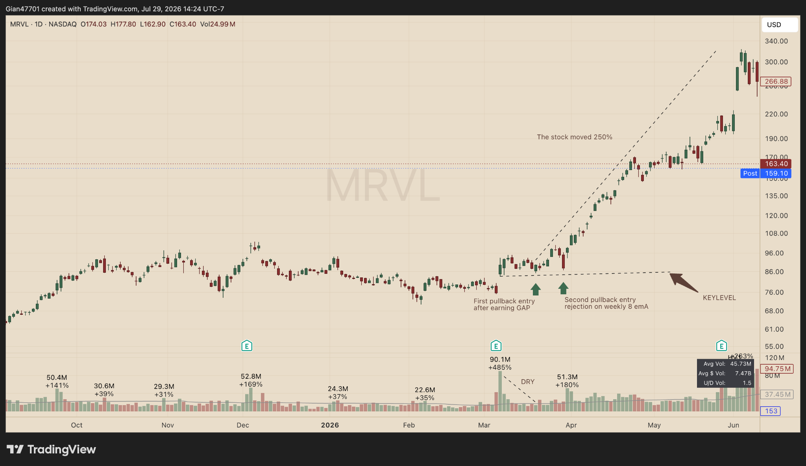
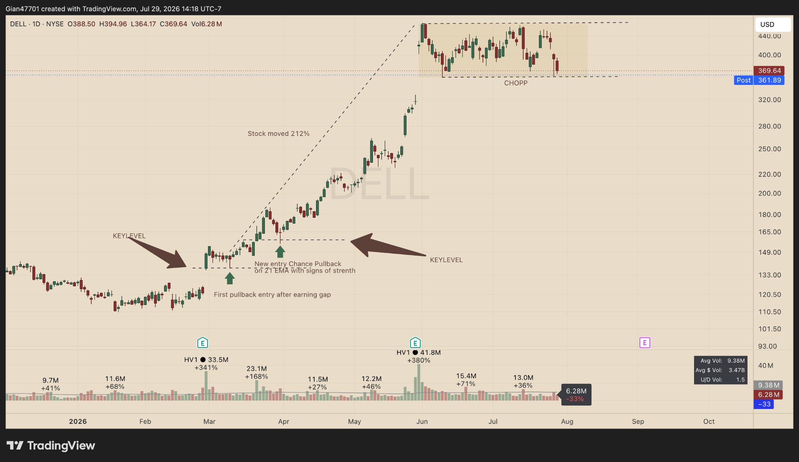

<section class="ronin-system-view view--hidden" id="roninSystemView" data-view="ronin-system">
  <div class="ronin-system-view__inner">
    <div class="ronin-system-page">
      <section class="system-hero" aria-labelledby="system-hero-title">
        <div class="system-hero-art" aria-hidden="true"></div>
        <div class="container system-hero-grid">
          <div class="system-hero-copy">
            <p class="eyebrow">3 mastery levels · 71 lessons · 20 assessments · private Discord</p>
            <h1 id="system-hero-title">Ronin Trading System</h1>
            <p class="system-hero-subtitle">A progressive training system that teaches the complete swing-trading framework I use and the discipline required to execute it from foundation skills to independent professional practice.</p>
            <p class="system-hero-story">I started trading in 2016, spent almost a decade focused on day trading and scalping, tested more approaches than I can count, and eventually discovered that the real edge was not more activity. It was better selection, cleaner structure, and a repeatable process.</p>

            <div class="system-badges" aria-label="Course principles">
              <span>Beginner → Intermediate → Advanced</span><span>Psychology integrated</span><span>Practice before progress</span><span>Exact chart setup</span><span>Private Discord</span>
            </div>

            <div class="system-hero-actions">
              <button class="button button-gold button-large" type="button" data-checkout-button>Unlock the Ronin Trading System</button>
              <a class="button system-button-outline button-large" href="#story">Read my story</a>
            </div>
            <p class="system-price-line"><strong data-price-label>One-time premium access</strong> · Full Academy · Ronin Full TradingView setup · Private Discord community</p>
            <p class="system-access-message" data-access-message aria-live="polite"></p>
          </div>
        </div>
      </section>

      <nav class="system-subnav" aria-label="Ronin Trading System sections">
        <div class="container">
          <a href="#story">My Journey</a>
          <a href="#learning-path">Learning Path</a>
          <a href="#curriculum">Curriculum</a>
          <a href="#benefits">Premium Benefits</a>
          <a href="#patterns">Core Patterns</a>
          <a href="#who-for">Who It Is For</a>
          <a href="#join">Join</a>
          <a href="#faq">FAQ</a>
        </div>
      </nav>

      <section class="journey-strip" aria-labelledby="journey-title">
        <div class="container">
          <div class="section-divider"><span></span><h2 id="journey-title">From Day Trader to Full-Time Swing Trader</h2><span></span></div>
          <div class="journey-grid">
            <article><div class="journey-number">2016</div><h3>Started Trading</h3><p>Curious, impatient, and determined to understand how markets move.</p></article>
            <article><div class="journey-number">01</div><h3>Day Trading Years</h3><p>Fast charts, constant decisions, and endless experimentation.</p></article>
            <article><div class="journey-number">02</div><h3>Studied Everything</h3><p>Books, charts, courses, traders, indicators, and many approaches.</p></article>
            <article><div class="journey-number">03</div><h3>The Aha Moment</h3><p>Strong stocks, clean structure, and patient swing entries changed everything.</p></article>
            <article><div class="journey-number">04</div><h3>Built My Rules</h3><p>I organized proven ideas into one process that fits how I think and trade.</p></article>
            <article><div class="journey-number">05</div><h3>Trade It Like a Business</h3><p>No shortcuts, no fame chasing, and no need to trade every day.</p></article>
          </div>
        </div>
      </section>

      <section class="story-section" id="story" aria-labelledby="story-title">
        <div class="container story-layout">
          <aside class="story-aside">
            <p class="kicker">The story behind the system</p>
            <h2 id="story-title">Ten years of trading before everything finally made sense.</h2>
            <blockquote><p>“I don’t predict. I prepare, execute, and manage risk.”</p><cite>— The Ronin Mindset</cite></blockquote>
          </aside>

          <div class="story-article">
            <h3>I began in 2016.</h3>
            <p>For most of my trading journey, I focused on day trading and scalping. I was attracted to the speed, the constant movement, and the idea that more activity could create more opportunity. I watched small timeframes, searched for fast entries, and spent countless hours trying to understand every movement.</p>
            <p>I studied indicators, strategies, execution methods, and traders with completely different styles. Some ideas worked briefly. Some looked perfect in hindsight but were difficult to execute in real time. Others worked in one market condition and then stopped working when the environment changed.</p>

            <h3>The problem was not a lack of information.</h3>
            <p>The problem was too much information without a clear framework. Every chart created a new opinion. Every loss tempted me to change something. I kept looking for a perfect approach when what I needed was a narrow process that told me what deserved attention and what should be ignored.</p>

            <h3>Swing trading changed the way I saw the market.</h3>
            <p>After almost ten years, I began studying swing trading seriously. The weekly and daily charts gave me time to think. Instead of reacting to every small move, I could identify the strongest stocks, wait for volatility to contract, mark the key level, and prepare the trade before it became actionable.</p>
            <p>The market began to look less random. I repeatedly saw the same cycle: <strong>strength, expansion, contraction, support, confirmation, and continuation.</strong> The best stocks often produced a powerful move, rested without giving back much of it, and then created another opportunity through a flat base or controlled pullback.</p>

            <h3>I did not invent these ideas.</h3>
            <p>Flat bases, relative strength, earnings gaps, volume contraction, moving-average support, and institutional accumulation existed long before Ronin Charts. I learned by studying successful traders, reviewing thousands of charts, and repeating the same ideas until they connected.</p>
            <p>What I built was not a new market law. I built a system that made sense to me: a rule-based framework that removes most stocks, most patterns, and most market conditions before I risk attention or capital.</p>

            <h3>Trading became a business.</h3>
            <p>I stopped judging progress by the number of trades I took. I stopped needing to make money every day. I began treating patience, cash, preparation, and review as real parts of the job.</p>
            <p>I do not promise spectacular returns, easy money, or a shortcut around practice. I care about sustainability, compounding, and decisions that can be repeated over a long career. The purpose of this course is to give a new trader the structure I spent years trying to build: what to trade, when to wait, how to recognize the patterns, and how to review the process honestly.</p>

            <h3>You do not need a huge account to begin.</h3>
            <p>A larger account does not repair poor discipline. A smaller account with clear rules is more valuable than a large account operated without a process. Begin by proving that you can follow the framework, save examples, journal decisions, and execute consistently. Capital can grow later. The first objective is competence.</p>

            <div class="story-callout">
              <strong>The system is learnable.</strong>
              <p>It is not effortless, and no result is guaranteed. But a new trader can learn to recognize strength, contraction, support, and confirmation through structured study and repeated chart review.</p>
            </div>
          </div>
        </div>
      </section>

      <section class="learning-path-section" id="learning-path" aria-labelledby="learning-path-title">
        <div class="container">
          <div class="section-divider"><span></span><h2 id="learning-path-title">A Progressive Mastery Path</h2><span></span></div>
          <p class="section-lead">The course does not throw the entire system at a new trader at once. Each level develops technical skill and psychological control together, then ends with a practical checkpoint.</p>
          <div class="learning-path-grid">
            <article>
              <span class="path-level">Level 1</span>
              <h3>Beginner Foundations</h3>
              <p>Learn the system boundaries, market regimes, leadership, watchlists, relative strength, catalysts, and the discipline to wait.</p>
              <ul><li>21 lessons</li><li>Five module quizzes</li><li>Foundation milestone · 80%</li></ul>
            </article>
            <article>
              <span class="path-level">Level 2</span>
              <h3>Intermediate Structure &amp; Execution</h3>
              <p>Master Flat Base Breakouts, Controlled Pullbacks, key levels, volume, timeframe alignment, triggers, and entry efficiency.</p>
              <ul><li>25 lessons</li><li>Six module quizzes</li><li>Structure milestone · 80%</li></ul>
            </article>
            <article>
              <span class="path-level">Level 3</span>
              <h3>Advanced Professional Execution</h3>
              <p>Integrate risk, portfolio heat, trade management, journaling, drawdown control, emotional discipline, and both complete playbooks.</p>
              <ul><li>18 lessons</li><li>Four module quizzes</li><li>Final mastery · 85%</li></ul>
            </article>
            <article class="learning-path-resources">
              <span class="path-level">Member Resources</span>
              <h3>Workspace &amp; Community</h3>
              <p>Build the exact Ronin Full TradingView layout and connect to the private Discord after the core training.</p>
              <ul><li>Seven guided lessons</li><li>Exact HEX palette</li><li>Premium Discord role</li></ul>
            </article>
          </div>
          <div class="psychology-callout">
            <div class="psychology-enso" aria-hidden="true"></div>
            <div><p class="kicker">Psychology is part of execution</p><h3>Technical skill without emotional control is not mastery.</h3><p>Fear, greed, FOMO, revenge trading, patience, loss handling, drawdowns, discipline, and consistency are taught throughout the same sequence in which those pressures appear in real trading.</p></div>
          </div>
        </div>
      </section>

      <section class="curriculum-section" id="curriculum" aria-labelledby="curriculum-title">
        <div class="container">
          <div class="section-divider"><span></span><h2 id="curriculum-title">What You Will Learn</h2><span></span></div>
          <p class="section-lead">Seventeen modules, seventy-one focused lessons, and twenty assessments. Students progress through Beginner, Intermediate, and Advanced levels, completing practical work and milestone checkpoints before the next level unlocks.</p>
          <p class="section-lead">Every lesson follows the same coach-led structure: why the rule matters, a clear explanation, a real example, the key steps, common mistakes, and a practical reflection task.</p>

          <div class="curriculum-grid">
            <article class="curriculum-card"><span class="module-lock">◆</span><small>Module 0</small><h3>Orientation</h3><p>The philosophy, system map, and study process.</p></article>
            <article class="curriculum-card"><span class="module-lock">◆</span><small>Module 1</small><h3>Market Conditions &amp; Patience</h3><p>Four regimes, trend-map evidence, patience, and overtrading control.</p></article>
            <article class="curriculum-card"><span class="module-lock">◆</span><small>Module 2</small><h3>Stock Selection &amp; Focus</h3><p>Liquidity, leadership, watchlists, FOMO, and information noise.</p></article>
            <article class="curriculum-card"><span class="module-lock">◆</span><small>Module 3</small><h3>Relative Strength &amp; Bias</h3><p>RS evidence, hidden leadership, confirmation bias, and story attachment.</p></article>
            <article class="curriculum-card"><span class="module-lock">◆</span><small>Module 4</small><h3>Earnings Gaps &amp; HVE</h3><p>Institutional urgency, event-day levels, and digestion.</p></article>
            <article class="curriculum-card curriculum-featured"><span class="module-lock">◆</span><small>Module 5</small><h3>Flat Base Breakout</h3><p>Anatomy, volume dry-up, pivot, confirmation, and failure.</p></article>
            <article class="curriculum-card curriculum-featured"><span class="module-lock">◆</span><small>Module 6</small><h3>Controlled Pullback</h3><p>First pullbacks, weekly 8 EMA rejection, and deterioration.</p></article>
            <article class="curriculum-card"><span class="module-lock">◆</span><small>Module 7</small><h3>Key Levels</h3><p>Map prior pivots, gap levels, HVE lows, and confluence.</p></article>
            <article class="curriculum-card"><span class="module-lock">◆</span><small>Module 8</small><h3>Volume</h3><p>Dry-up, expansion, run rate, and high-volume failure.</p></article>
            <article class="curriculum-card"><span class="module-lock">◆</span><small>Module 9</small><h3>Timeframe Structure</h3><p>Weekly context, daily setup, and 30-minute precision.</p></article>
            <article class="curriculum-card"><span class="module-lock">◆</span><small>Module 10</small><h3>30-Minute Triggers</h3><p>Higher lows, reclaims, pivots, LOD ATR, and no chase.</p></article>
            <article class="curriculum-card"><span class="module-lock">◆</span><small>Module 11</small><h3>Risk &amp; Drawdowns</h3><p>Structural stops, position size, portfolio heat, losses, and drawdown control.</p></article>
            <article class="curriculum-card"><span class="module-lock">◆</span><small>Module 12</small><h3>Management &amp; Emotion</h3><p>Failure, winners, trails, greed, fear, breakeven stops, trims, and adds.</p></article>
            <article class="curriculum-card"><span class="module-lock">◆</span><small>Module 13</small><h3>Journal &amp; Psychology</h3><p>Process grades, revenge-trading resets, consistency, and review cycles.</p></article>
            <article class="curriculum-card"><span class="module-lock">◆</span><small>Module 14</small><h3>Complete Playbook</h3><p>Full checklists, workflow, and final certification exercise.</p></article>
            <article class="curriculum-card curriculum-featured"><span class="module-lock">◆</span><small>Module 15</small><h3>TradingView Workspace</h3><p>Install the four tools, apply the Ronin Full palette, and build the complete weekly, daily, and 30-minute workflow.</p></article>
            <article class="curriculum-card curriculum-featured"><span class="module-lock">◆</span><small>Module 16</small><h3>Private Discord Community</h3><p>Connect your Discord account, receive the premium role, ask better questions, and use the group without losing independence.</p></article>
          </div>

          <div class="curriculum-note"><span>◆</span> Premium lesson content, TradingView resources, and Discord linking are available only after the user has an active entitlement.</div>
        </div>
      </section>

      <section class="premium-benefits-section" id="benefits" aria-labelledby="benefits-title">
        <div class="container">
          <div class="section-divider"><span></span><h2 id="benefits-title">Everything Included with Premium</h2><span></span></div>
          <p class="section-lead">This is not only a collection of articles. It is a protected learning environment designed to take a new trader from basic chart language to a complete, repeatable workflow.</p>

          <div class="premium-benefit-grid">
            <article>
              <span class="benefit-index">01</span>
              <h3>Complete Ronin Academy</h3>
              <p>Seventeen modules and seventy-one lessons arranged as a mastery path. Every module has learning objectives, short lessons, practical exercises, reflections, quizzes, and clear completion requirements.</p>
              <ul><li>Three mastery levels</li><li>Practice and reflection tracking</li><li>Twenty assessments</li><li>Integrated psychology training</li></ul>
            </article>
            <article>
              <span class="benefit-index">02</span>
              <h3>Exact TradingView Setup</h3>
              <p>Build the Ronin Full workspace with the final parchment palette, daily and weekly moving-average hierarchy, volume tools, swing data, and the extension indicator used inside the workflow.</p>
              <ul><li>Four direct indicator links</li><li>Exact HEX colors</li><li>Why and how each tool is used</li><li>Weekly → Daily → 30-minute workflow</li></ul>
            </article>
            <article>
              <span class="benefit-index">03</span>
              <h3>Private Premium Discord</h3>
              <p>Connect your Discord account inside the Academy and receive the Ronin Premium role. Study charts, ask course questions, and review decisions with members using the same framework.</p>
              <ul><li>Course questions</li><li>Flat-base studies</li><li>Pullback studies</li><li>Trade-review discussions</li></ul>
            </article>
          </div>

          <div class="premium-community-note">
            <strong>The Discord is not a signal room.</strong>
            <p>Members ask for feedback on reasoning—not permission to trade. No “buy now” calls, no guaranteed returns, and no outsourcing responsibility for a decision.</p>
          </div>
        </div>
      </section>

      <section class="patterns-section" id="patterns" aria-labelledby="patterns-title">
        <div class="container">
          <div class="section-divider"><span></span><h2 id="patterns-title">Two Core Patterns</h2><span></span></div>
          <div class="pattern-showcase-grid">
            <article class="pattern-showcase">
              <div class="pattern-copy">
                <p class="kicker">Pattern one</p><h3>Flat Base Breakout</h3>
                <p>A proven leader holds near its highs, volatility contracts, volume dries up, and price clears a defined pivot as demand returns.</p>
                <ul><li>Prior expansion</li><li>High, shallow base</li><li>Final contraction</li><li>Clear pivot</li><li>Volume confirmation</li></ul>
              </div>
              
            </article>

            <article class="pattern-showcase">
              <div class="pattern-copy">
                <p class="kicker">Pattern two</p><h3>Controlled Pullback</h3>
                <p>A leader retreats toward meaningful support on controlled volume, stabilizes, and confirms that buyers have returned.</p>
                <ul><li>Proven trend</li><li>Lower-volume retreat</li><li>Key-level confluence</li><li>Higher low or reclaim</li><li>Efficient trigger</li></ul>
              </div>
              
            </article>
          </div>

          <div class="example-strip">
            
            <div><p class="kicker">The lesson beyond the winner</p><h3>Learn when a strong stock is no longer in a tradable structure.</h3><p>The course includes clean examples, failures, and “almost setups” so a new trader learns to reject chop rather than forcing every strong stock into a trade.</p></div>
          </div>
        </div>
      </section>

      <section class="audience-section" id="who-for" aria-labelledby="audience-title">
        <div class="container">
          <div class="section-divider"><span></span><h2 id="audience-title">Who This System Is For</h2><span></span></div>
          <div class="audience-grid">
            <article><span>01</span><h3>New traders who want structure</h3><p>A step-by-step framework instead of random strategy hopping.</p></article>
            <article><span>02</span><h3>Traders tired of chasing</h3><p>Learn to wait for defined patterns, levels, and confirmation.</p></article>
            <article><span>03</span><h3>Traders who want fewer, better trades</h3><p>Focus on leaders and reject low-quality activity.</p></article>
            <article><span>04</span><h3>Traders building a business</h3><p>Use preparation, journaling, and evidence-based review.</p></article>
          </div>

          <div class="not-for-box">
            <h3>This is not for you if you want:</h3>
            <p>Live signals, guaranteed returns, a shortcut around study, a strategy for every asset class, or constant trading activity. The system is educational and requires practice.</p>
          </div>
        </div>
      </section>

      <section class="join-section" id="join" aria-labelledby="join-title">
        <div class="join-art" aria-hidden="true"></div>
        <div class="container join-grid">
          <div>
            <p class="eyebrow">Ready when you are</p>
            <h2 id="join-title">Join the Ronin Trading System.</h2>
            <p>Unlock the complete Academy, all seventy-one lessons, twenty assessments, level milestones, the exact TradingView setup, account-based progress, and the private premium Discord community.</p>
            <ul class="join-list"><li>Beginner → Intermediate → Advanced pathway</li><li>Seventeen structured modules</li><li>Seventy-one focused lessons</li><li>Twenty quizzes and mastery checkpoints</li><li>Integrated trading psychology</li><li>Practice, reflection, notes, and progress tracking</li><li>Ronin Full TradingView setup</li><li>Private premium Discord access</li></ul>
          </div>
          <aside class="join-card">
            <p class="kicker">Premium access</p>
            <h3 data-price-label>One-time premium access</h3>
            <p>This package is configured for one-time premium access by default. Your developer can change the Stripe product to a subscription if you decide to use recurring membership.</p>
            <button class="button button-gold button-large" type="button" data-checkout-button>Unlock Now</button>
            <a class="system-login-link" href="/login.html?return=/ronin-trading-system.html">Already purchased? Log in</a>
            <p class="join-small">Educational content only. Trading involves risk. No outcome is guaranteed.</p>

            <form class="demo-unlock" data-demo-form hidden>
              <label for="demo-code">Developer demo unlock code</label>
              <div><input id="demo-code" name="code" autocomplete="off" placeholder="RONIN-DEMO" /><button type="submit">Unlock demo</button></div>
              <p data-demo-message aria-live="polite"></p>
            </form>
          </aside>
        </div>
      </section>

      <section class="faq-section" id="faq" aria-labelledby="faq-title">
        <div class="container faq-layout">
          <div><p class="kicker">Questions before joining</p><h2 id="faq-title">Frequently Asked Questions</h2><p></p></div>
          <div class="faq-list">
            <details><summary>Is this a signal service?</summary><p>No. The course teaches a complete decision framework. It does not tell members what to buy or guarantee that a setup will work.</p></details>
            <details><summary>Is the course suitable for a beginner?</summary><p>Yes. It begins with market structure and stock selection before progressing to patterns, execution, risk, management, and review. Beginners should practice with historical charts and simulation before using meaningful capital.</p></details>
            <details><summary>What markets does the system cover?</summary><p>The framework is designed around long swing trades in liquid US-listed stocks. The course does not claim to cover options, futures, crypto, short selling, or day-trading strategies.</p></details>
            <details><summary>How is the content unlocked?</summary><p>The reference code creates a Stripe Checkout Session. A verified webhook grants a server-side entitlement to the user account. The premium lesson files are not served to unauthorised users.</p></details>
            <details><summary>Can I learn at my own pace?</summary><p>Yes. Progress, practice completion, reflections, quiz scores, and lesson notes are stored per user. The Academy resumes from the most recently opened lesson while still enforcing the Beginner → Intermediate → Advanced mastery order.</p></details>
            <details><summary>What is included in the private Discord?</summary><p>Premium members can connect one Discord account from inside the Academy. The group is designed for course questions, chart studies, market-context discussion, and process review. It is not a live signal service.</p></details>
            <details><summary>Do I need the TradingView indicators?</summary><p>The system can be understood from price, volume, and structure, but Module 15 shows the exact workspace used to organize the evidence. The four linked scripts are community indicators hosted by their original TradingView authors, so availability and features can change.</p></details>
            <details><summary>Will a complete beginner understand the course?</summary><p>Yes. The course begins with foundations, uses short lessons and defined objectives, and requires practical chart work before progression. Technical rules and trading psychology become more demanding as the student advances.</p></details>
            <details><summary>Does purchasing guarantee profitability?</summary><p>No. Education cannot guarantee results. Performance depends on market conditions, execution, discipline, experience, and risk. The system should be independently tested.</p></details>
          </div>
        </div>
      </section>
    <div class="sticky-course-cta" data-sticky-course-cta>
  <div>
    <strong>Ronin Trading System</strong>
    <span>71 lessons · mastery checkpoints · private Discord</span>
  </div>
  <button class="button button-gold" type="button" data-checkout-button>Unlock</button>
</div>
  </div>
    </div>

    
</section>


